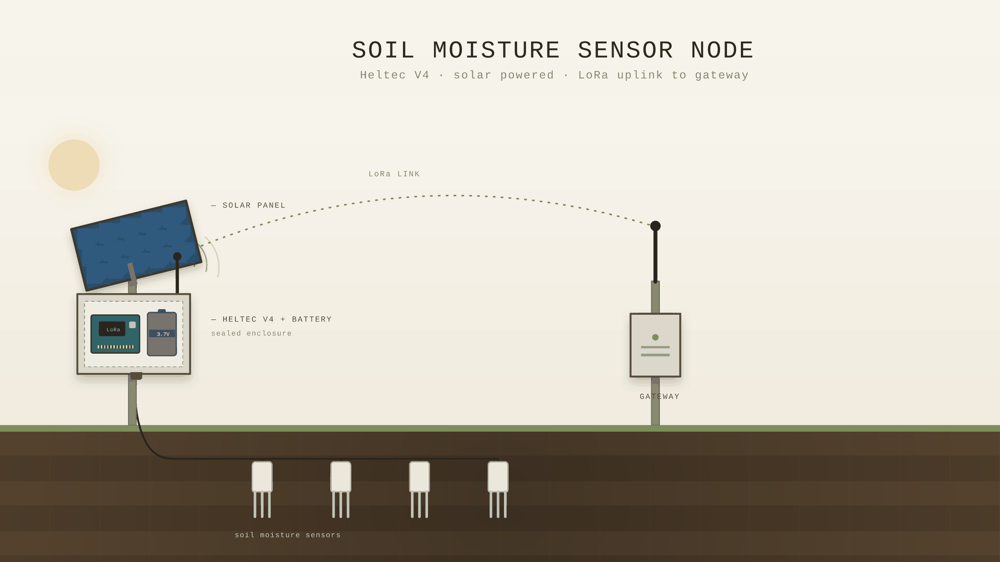
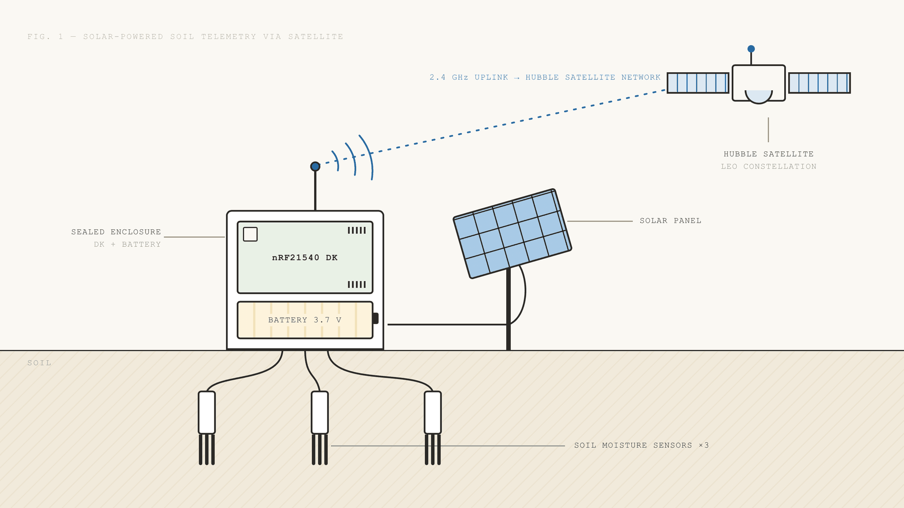

Build a soil moisture sensor whose volumetric water content response is calibrated to the thin, rocky, organic-rich soils of the western North Carolina mountains — so that a reading taken on a ridge means what it says.
In developmentNSF FLiTE Scholars · Western Carolina University
You cannot find the fastest water in a creek nobody has ever measured.
Three NSF FLiTE Scholars are building the baseline record for the hydrologic cycle of western North Carolina — soil moisture from a sensor being built and calibrated for these mountain soils, stream discharge from an acoustic Doppler profiler built for headwater channels. The assignment is the measurement itself: the raw data that has never been collected in these watersheds.
The assignments
The NSF FLiTE program funds each scholar against a defined engineering problem. These three were pointed at the same gap from two directions — what the ground is holding, and what the channel is carrying.
Build a soil moisture sensor whose volumetric water content response is calibrated to the thin, rocky, organic-rich soils of the western North Carolina mountains — so that a reading taken on a ridge means what it says.
In developmentDesign an acoustic Doppler current profiler that can resolve a velocity profile in water too shallow, too steep and too debris-loaded for a commercial instrument to sit in.
In designCo-developing the same profiler. It has to survive the channel as well as measure it, and be cheap enough to put one on every reach rather than one on the river.
In designWhat the assignment is
Capture the baseline data that describes the real-time hydrologic cycle of western North Carolina, and from that record help resolve where velocity peaks in a waterway — which reaches move water fastest, and under what conditions.
What it is not
This is not flood estimation and it is not landslide prediction. Those are downstream uses, handled by other layers of the system. This work is the measurement underneath them — and nothing can be forecast from a record that was never collected.
Where the data goes — the readings feed three layers of the Cullowhee Creek system: NOAH, the in-water sensing network · SKYE, the forecast engine · TERRA, the ground layer · the scholars supply the measurement; each layer decides what to do with it.
Two instruments, one water balance
Off-the-shelf soil moisture probes are calibrated against reference soils that look nothing like what is under these ridges — thin, rocky, steep, and full of organic matter. Read a Piedmont calibration curve on a Nantahala hillside and the number that comes back is confidently wrong.
So the instrument is being built rather than bought. The soil moisture sensor is under development by Jackson Pickering and Dr. Mickey Henson, calibrated to western North Carolina soils from the outset rather than fitted to a curve derived somewhere else. A generic mineral-soil calibration is good to roughly ±0.03 m³/m³ of volumetric water content; a medium-specific one tightens that to ±0.01–0.02. Antecedent wetness is the largest single unknown in the water balance, so a factor of two or three on that term is the difference between a reading you can build on and one you can only argue with.
Jackson Pickering, NSF FLiTE Scholar · Dr. Mickey HensonAn acoustic Doppler current profiler measures a velocity profile through the water column rather than a single point — the difference between knowing a creek is three feet deep and knowing what it is carrying. Commercial ADCPs are built for rivers: too large, too power-hungry, and too expensive to leave in a headwater stream.
This work designs an ADCP for the streams that feed the rivers — the shallow, steep, debris-loaded channels where the standard instrument does not fit and the standard budget does not stretch to one per reach. A velocity profile is also the raw ingredient for the question underneath all of this: which reach of a creek moves water fastest, and when.
Brody Yarbrough & Gabe Hitesman · NSF FLiTE ScholarsGetting the reading off the ridge
A calibration is only worth what it returns. The probes sit on slopes with no cell coverage and no mains power, which makes the uplink part of the instrument rather than an accessory to it. Two node designs are under evaluation for the same buried array — a short-haul radio to a local gateway, and a direct satellite path where no gateway is reachable.


What gets measured today
Stream depth and discharge are measured on the large rivers. On the small and medium headwater streams that feed them — the ones that rise in minutes and do most of the killing — they are not measured at all. Everything below is running on modeled rainfall and inference. It works well enough to be useful, and not well enough to be trusted the way a measurement can be trusted.
The live watershed map opens in its own window.
Open the live map — set the map address to embed it here —Modeled, not measured — every sub-basin above is colored from forecast rainfall and radar, with soil wetness estimated rather than observed · the instruments on this page exist to replace the estimate with a reading · back to the main system
The question underneath
Rain that lands on a watershed has exactly three places to be. It can go into the soil. It can go back to the atmosphere through the plants. Or it can run into the waterways. That is the whole accounting, and it has to close — every inch that does not soak in and does not transpire arrives in the creek.
Which is why the split matters more than the total. Ten inches onto dry ground is a manageable event; the same ten inches onto ground that is already full is a flood, because the soil term has gone to zero and the entire volume is routed to the channel. Helene made this point in the worst possible way: roughly two-hundred-year rainfall fell on drought-dry soil and produced about a nine-year peak. The rain was extreme. The ground had room.
Why this is worth instrumenting — close two of the four terms with real measurements and the third stops being a guess, because the balance constrains it · see how much rain it would take today
The ground layer
Soil moisture is not only a flood term. A slope fails when the water in it exceeds what the friction can hold, which is why Helene broke these mountains as well as flooding them — the USGS mapped more than two thousand landslides across western North Carolina, and the slopes above Cullowhee Creek carry the same geology.
The system already watches those hillsides from orbit: ESA's Sentinel-1 radar measures millimetre-scale creep across the whole watershed every twelve days, looking for the slope that starts moving before it fails. What that layer cannot see is how much water is in the ground it is watching. A probe calibrated to these soils is what turns "this slope is creeping" into "this slope is close." That is a downstream use of the soil moisture record, not the assignment that produced it — the scholars are collecting the measurement; what each layer does with it afterward is a separate question.
Click any outlined area for its twelve-month motion history · weeks-scale, not minutes — this layer finds slow pre-failure creep and can never warn of a debris flow mid-storm; that remains SKYE's rainfall thresholds' job · updates with each satellite pass (~12 days) and is cloud-processed, so during an outage its posture is last known, not live · a calibrated soil moisture record is the missing second variable here, not a replacement for the radar · open the map full screen · full analysis
How it works
The sensors in the creek, the gateways that carry the data out, the satellites overhead, and the weather that drives it all — on the real watershed. Two of the instrument classes already sited in that model are exactly what this research supplies: the soil-and-rain stations set mid-hillslope in each sub-basin, and the side-looking ADCP at the campus reference section. Drag to look around; zoom in for the instrument labels.
Interactive · the true Cullowhee Creek watershed on 2025 QL1 lidar terrain at 10 ft, NAVD88, north up, with vertical relief exaggerated about 3.4× for legibility · sub-basins are cumulative drainage areas; instrument positions are DEM-derived candidate sites, not final survey points.
Why
We were designing a hydrokinetic power platform — a vessel that would find the fastest water in a river and anchor there, because power goes with the cube of velocity and a ten percent gain in speed is a third more electricity. To find the fastest water, the vessel needed to know where the fastest water was.
The data did not exist. Not in a form we could use, and in the headwaters, not in any form at all. Depth and discharge are recorded on the large rivers; the small and medium streams that feed them are unrecorded. And underneath that gap was a deeper one — the raw measurements that would let anyone compute the answer had never been taken either.
So the question turned around. Instead of asking where the water is fastest, we started asking the question one level down: when rain arrives, where does it actually go — into the soil, back through the plants, or into the creek? Answer that with instruments rather than assumptions and the velocity question becomes answerable, because you finally know how much water is in the channel and when it got there. Everything else the system does is built on top of that record — but the record comes first.
It is the habit of the Coweeta Hydrologic Laboratory, just up the road: measure the ground truth, then trust what you measured.
Where it stands
Both instruments are in development. The soil moisture sensor is being built and calibrated against western North Carolina soils; the headwater ADCP is in design. Neither has produced a validated field record yet, and nothing on this page feeds an operational warning. What is being built here is the baseline — the measurement record that does not exist yet — not a warning product.
The work is supported by the NSF FLiTE program — Fostering Leaders in Technology Entrepreneurship — a $1.5 million National Science Foundation scholarship initiative in Western Carolina University's College of Engineering and Technology, which pairs need-based support with mentoring in bringing engineering work to the world. Program details.